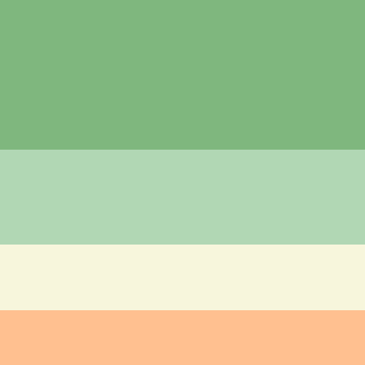

Color Module Level 3, publicada en enero de 2022, y en la recomendación CSS Color Module Level 4, actualmente (mayo de 2022) en elaboración. Estas propiedades permiten establecer el color y transparencia del texto o del fondo del elemento. En esta lección se explica cómo expresar colores mediante códigos numéricos (RGB, HSL o HWB, utilizando la notación funcional, sin comas) o mediante nombres de colores (básicos, extendidos o de sistema). En la lección Esquemas de colores se explican alguna de las formas de obtener combinaciones de colores visualmente atractivas.
Paleta De Colores Formas de Uso Colores | Nombre | Descripcion | Enlace |
|---|---|---|
| MDN | Documentacion sobre css, html, JavaScript | Developer Mozilla |
| Color Hunt | Nos muestra diferentes paletas de colores para usar en el desarrollo de la pagina web | colohunt |
| Color Picker | Nos ayuda a poder encontrar el color que queramos en hexadecimal o en fomato para rgba. | colopicker |
El selector Css es el identificador en la hoja de estilos del elemento o elementos del DOM a los que se aplicarán las declaraciones contenidas en la regla de la que forma parte dicho selector. Como curiosidad, en algunas partes, al elemento del DOM al que aplica el selector Css se le llama sujeto del selector.
Tipo De Uso De Selectores